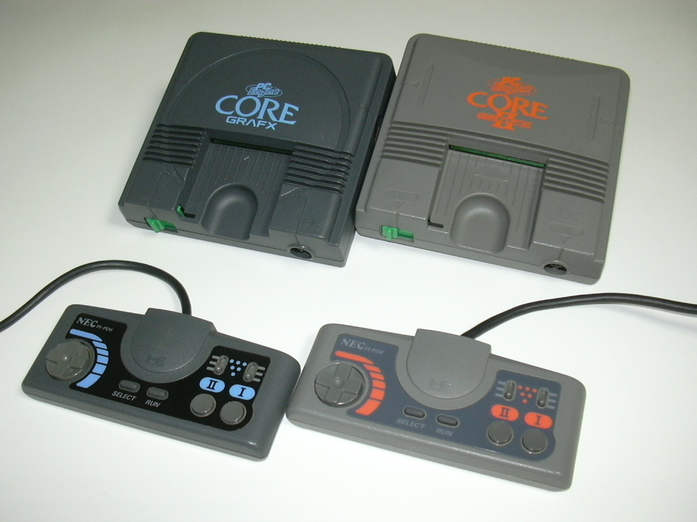

BUY NOW!
While Supplies Last
The PC Engine Core Grafx is an updated model of the PC Engine, released in Japan on December 8, 1989. It has the same form factor as the original PC Engine, but it changes the color scheme from white and red to black and blue and replaces the original's radio frequency-output connector with a composite video AV port. It also used a revised CPU, the HuC6280A, which supposedly fixed some minor audio issues. A recolored version of the model, known as the PC Engine CoreGrafx II, was released on June 21, 1991. Aside from the different coloring (light grey and orange), it is nearly identical to the original CoreGrafx except that the CPU was changed back to the original HuC6280.
The PC Engine Shuttle was released in Japan on November 22, 1989, as a less expensive model of the console, retailing at ¥18,800. It was targeted primarily towards younger players with its spaceship-like design and came bundled with a TurboPad II controller, which is shaped differently from the other standard TurboPad controllers. The reduced price was made possible by removing the expansion port from the back, making it the first model of the console that was not compatible with the CD-ROM² add-on. However, it does have a slot for a memory backup unit, which is required for certain games. The RF output used on the original PC Engine was also replaced with an A/V port for the Shuttle.
The PC Engine GT is a portable version of the PC Engine, released in Japan on December 1, 1990, and then in the United States as the TurboExpress. It can play only HuCard games. It has a 2.6-inch (66 mm) backlit, active-matrix color LCD screen, the most advanced on the market for a portable video game unit at the time. The screen contributed to its high price and short battery life, however, which hurt its performance in the market. It also has a TV tuner adapter as well as a two-player link cable.